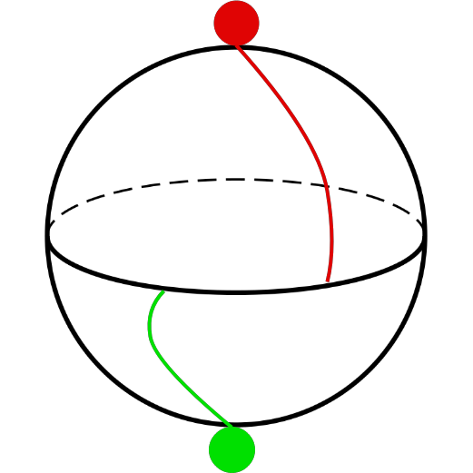
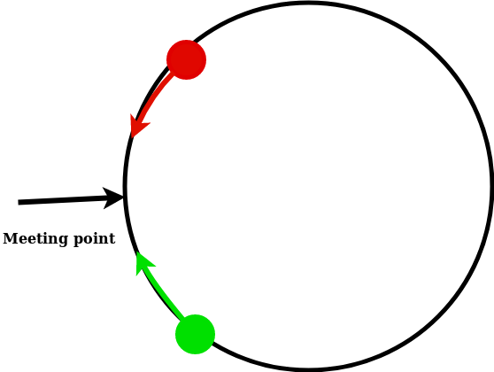
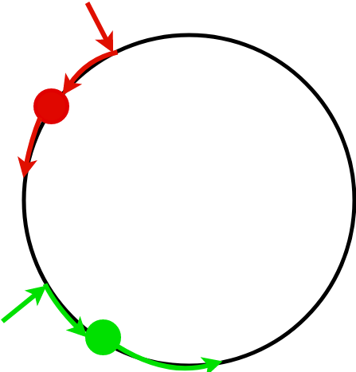
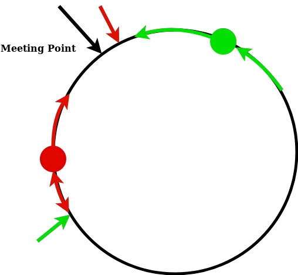

author: niplav, created: 2019-04-02, modified: 2020-06-01, language: english, status: maintenance, importance: 3, confidence: likely
Two people are abducted and placed on the opposite poles of a habitable planet. They want to find each other, but they have no way to communicate. The only things they know is their their own respective position on the planet and the position of the equator and the poles. Here, different methods for finding each other under similar conditions are explained and discussed, and a deterministic method for finding each other is introduced.
Wo ist dein Delos, wo dein Olympia,
Daß wir uns alle finden am höchsten Fest?
— Friedrich Hölderlin, “Gesang des Deutschen”, 1800
The original problem is taken from Munroe 2014:
If two immortal people were placed on opposite sides of an uninhabited Earthlike planet, how long would it take them to find each other?
— Randall Munroe, “Lost Immortals” in “What If?”, p. 183, 2014
Here, I add several clarifications to the problem.
For the following ideas, it is not necessary that the planet is earth-like, but it is assumed that the planet has a relatively flat surface, lacking oceans, where the two people can leave footprints.
Each of the two people has the following abilities:
Both lack all other abilities, including (but not limited to) creating new technology and communicating when they are out of sight (no fireworks, launching spaceships etc.).
Both people are typical, but had no opportunity to communicate with each other beforehand. They can reason about each others' strategy and behavior, but have no intricate knowledge about each others decision process (if they are artificial agents, they don't know each others' algorithm).
These two people want to find each other.
Munroe proposes different solutions:
A very similar problem was discussed in a Mathematics Stack Exchange post:
Suppose you and your friend end up on a big sphere. There are no visual cues on where on the sphere you both are, and the sphere is way bigger than you two. There are no means of communication. You can determine your relative position and direction by navigating the stars. You can move anywhere, and your friend too.
Upon inspecting the sphere, you see it is rock-solid, so you cannot create markings. To protect the environment, you are not allowed to leave other stuff, like a blood trace or breadcrumbs.
— RobAu, “Fastest way to meet, without communication, on a sphere?”, 2015
In this problem, marking is not possible, and players don't start at the opposite sides of the planet (which makes a solution a lot harder).
Move at random. [...] you could prefer to walk longer distances in a straight line as opposed to choosing a completely new direction after every centimeter of movement.
— MvG, answer to “Fastest way to meet, without communication, on a sphere?”, 2015
This solution does not need any prerequisites.
So the first thing to do is to calculate the size of the sphere (by picking a direction and walking until you arrive back at the start point or some other, more efficient technique). At that point, you can work out an exhaustive search pattern and the duration to perform one (a spiral pattern is close to optimal but difficult for a human to perform). That duration becomes your frequency of decision making. Once per period, you flip a coin. Heads, you do an exhaustive search. Tails, you stay put. Each of the longer period (e.g. the less efficient search pattern), you have a 50/50 chance of doing the opposite of your partner and thus discovering each other in the course of the exhaustive search.
— Danikov, answer to “Fastest way to meet, without communication, on a sphere?”, 2015
This is similar to the strategy of randomly switching positions, but without opposite starting positions. It assumes one can adequately calculate the circumference of the sphere, which is not a given, and it assumes that the person can generate random bits.
I think a better strategy is to pick a direction (any will do), stick to it and randomise your speed.
If both parties do this their paths will cross twice each orbit (unless they are on the same orbit in which case they will meet sooner due to randomised speed)
if you go full random changing direction as well as velocity you aren't guaranteed to ever cross the path of the other. (although as t gets large it becomes increasingly likely that your paths will cross at least once.)
Speed randomisation is necessary to avoid never meeting because of resonance.
— Luke McGregor, answer to “Fastest way to meet, without communication, on a sphere?”, 2015
I would posit that a better-than-random solution would include finding the most "interesting" such configuration (so first you have to map them all by traveling the sphere methodically) and heading there as a Schelling point.
— Qwertronix, answer to “Fastest way to meet, without communication, on a sphere?”, 2015
This solution is similar to most practical solutions to these kinds of problems. It assumes that there is a most interesting star configuration, the size of such a configuration, and a given metric on how to determine the interesting-ness of such a configuration. The metric is the least difficult of them: given a size of the region of sky, the most interesting such region would be the one that is the most compressible (or most regular). The size aspect of this possible configuration is much more difficult: Where does such a configuration end? One possible answer is: "At the horizon.", then the Schelling point) would be the point where the whole sky is most interesting.
Another solution is possible due to the fact that both people start out
at the opposite sides of the planet. Each person determines randomly
whether they should travel to the opposite side of the planet or stay
at ones own side for the duration of such a travel. This drastically
decreases the time until meeting, since the chance of not having met after
n such iterations the chance of having met is $1-\frac{1}{2^n}$. Munroe
proposes coin flips to determine whether one changes position, but one
can imagine other such methods if coins are not available.
One could assign the choice of staying to the left body half and the choice of going to the other side of the planet to the right body half, and then choosing the strategy based on which part of the body itches first. This would be useful since humans are notoriously bad at consciously generating random bits (see Figurska et al. 2007).
On the other hand, this method could be biased, since many humans have points on their skin that are constantly itchy.
A better solution is possible because both people start out at the opposite sides of the planet, and know their own respective position on the planet.
Taking their own position as one pole, they could infer an equator as the set of points on the planet that is equally far away from each of their positions. They would then both proceed to go to this equator and start walking along it.

Then each person could follow the following algorithm: If they had walked less than half of the circumference of the planet, and encountered footsteps, they would reverse direction. If they had walked more than half of the circumference of the planet, they would continue walking no matter whether they would see other footsteps on the ground.
This would ensure that they would deterministically meet in $\cal{O}(n)$
($n$ being the circumference of the planet).
This code does not deal with the possibility that the other agent doesn't use the same method, or that they don't arrive at the equator at the same time.
circumference=4*walk_to_equator() /* circumference in steps */
set_marker() /* in case footsteps are not visible after some time */
equator_steps=0
while met_person()==false
walk_step()
equator_steps++
if marker_visible==true and steps_on_equator<circumference/2
turn_around()
Here, it is assumed that they both reach the equator at the same time.
If both start walking towards each other, the algorithm succeeds:
Both can walk at most half of the length of the equator upon meeting
each other in the extreme case, namely, starting back to back and not
realizing it. In this case, the last part of the method is not applied,
because both will walk less than half of the length of the equator in
any case. In this case, finding each other takes at most $\frac{3}{4}$
of the time it takes to walk across the whole equator (including the
walk from the starting point to the equator).

If they both start walking in the same direction, the method still succeeds: one of the two people has a distance of less than half of the length of the equator to the starting point of the other person.

This person p₁ walks that distance, and then can use that fact as a distinguishing strategy for acting, namely, turning around and starting to walk towards the other person. The other person p₂ can use the fact that their distance to the starting point of the other person is more than half of the length of the equator to distinguish themselves, and continue walking. Because p₁ is now walking towards p₂, they will definitely meet.

Interestingly, because they are both walking the whole time, it will take them less than one walk across the whole equator for this algorithm (again including the journey from the pole to the equator).
Of course, this strategy is only one of infinitely many that will result in the two people deterministically meeting after a linear amount of time. Other such algorithms include meeting at any specific point on the planet (such as the starting position of one particular person, or 0°0′N 0°0′E etc.). However, the proposed strategy is different from these.
First of all, it is not person-specific: Both people follow the same strategy, and still manage to meet each other deterministically in linear time. This is not the case for strategies that involve one person doing something different from the other person: there is no way for them to know which one of them was meant in the first place, unless specific characteristics are given (but those are, of course, also person-specific).
Second, it does not need an absolute coordinate system. The algorithm works even when the two people only known where the equator is (e.g. with an inner sense of direction or a compass), since they randomly choose directions once they have reached the equator.
This allows quite restricted conditions for the algorithm to work: Each of the people knows the direction towards the equator, knows how much they have walked, and can leave one sign on the surface (more are not needed, since the point where they both reached the equator is the only relevant information to both).
There are, of course, several problems with this approach.
This strategy assumes several things:
This objection of course applies to all possible strategies, including Randomly Switching Positions and nearly all of Munroes propositions. Ideally, one would try to generate all possible strategies of a typical agent and then generate a probability distribution over them, using methods such as Minimum Message Length and Solomonoff Induction to penalize very complex solutions.
A good approximation to this is to assume that the other person is moving around randomly, accounting slightly the possibility that they have stayed where started, and then taking into account the other strategies proposed here.
More intricate and speculative methods of finding this (or even more optimal) strategies are possible: One can imagine using a self-sampling or self-indication assumption and try to act in predictable ways, assuming that the other person is similar to oneself based on the assumption that both are typical observers. Furthermore, it would be possible (but perhaps computationally intractable) to create a probability distribution over the set of possible other observers and then calculate their respective strategies. For this, a fixed period of time might be allocated, such as a day (if the planet has them) or the time it takes to do a full walk from the starting point over the equator back to the origin. Here, one runs into issues, because the two most obvious choices (walking along the circumference once vs. switching places) seem to be equally simple.
If both of them arrive at opposite sides of the equator, following the algorithm will result in them both switching their direction or both of them continuing with their course. In this case, the algorithm fails, and results in them not meeting after less than one iteration. Several strategies would be possible at this point: Attempt the algorithm again by returning to the starting point, or assuming one of the other strategies. This becomes less of a problem depending on how exact the persons' knowledge about the already walked distance and the circumference of the planet is. The more accurate, the less often the case of arriving at perceived opposite points of the equator occurs.